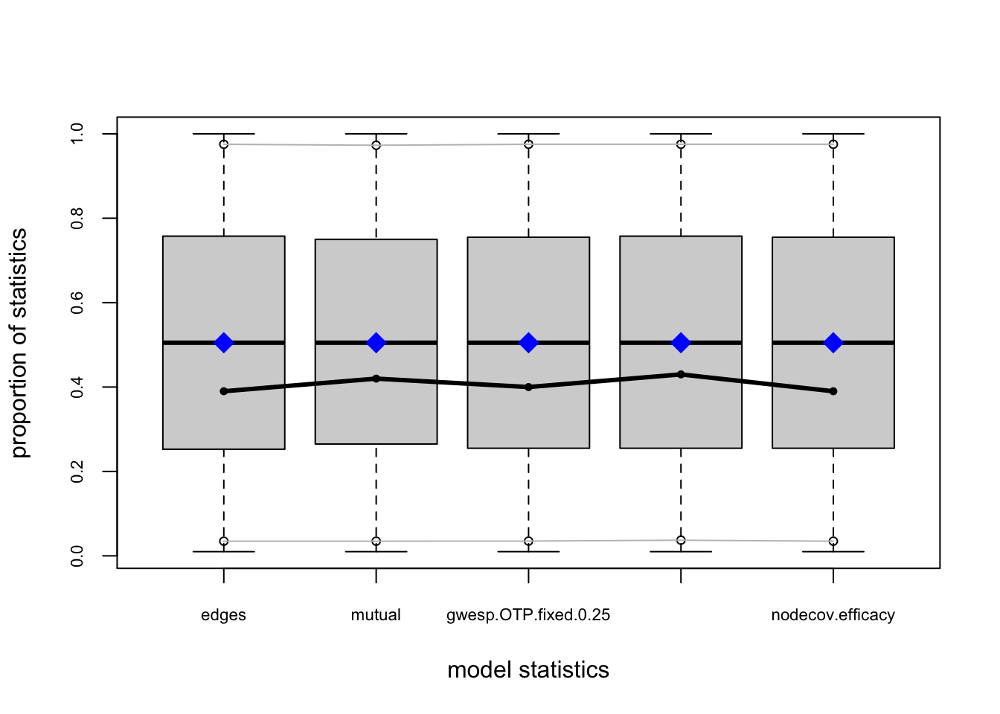
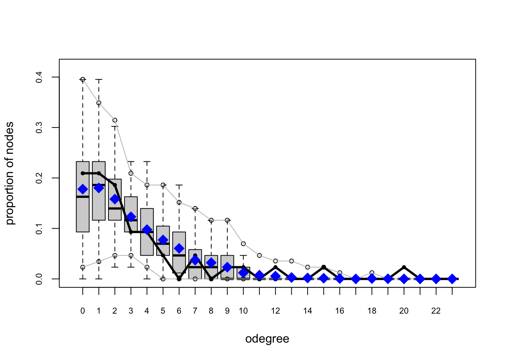
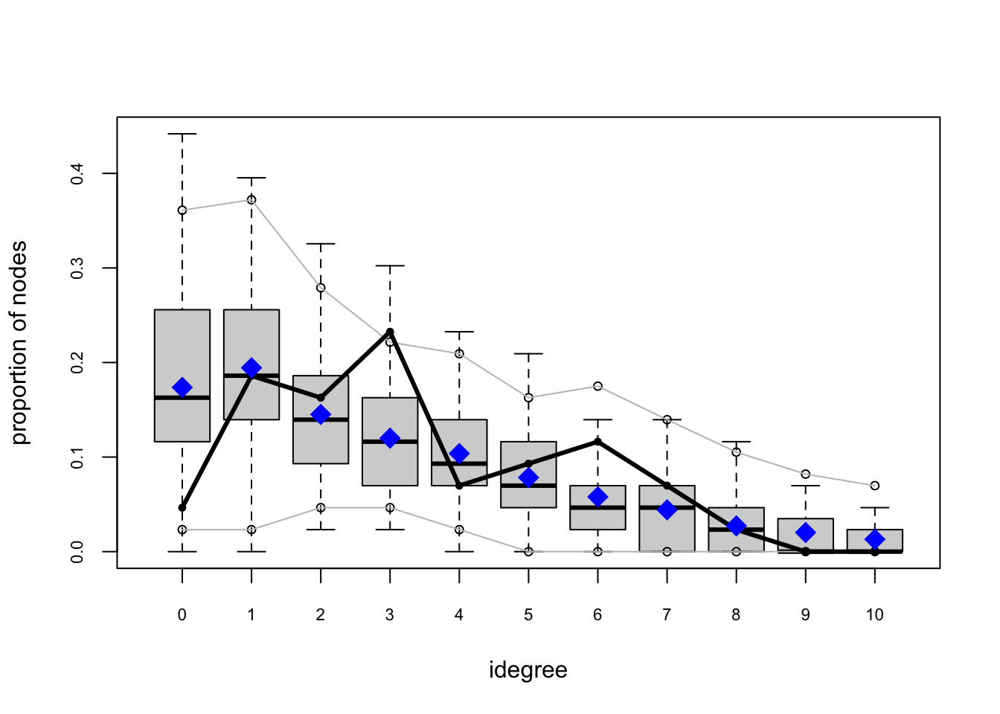
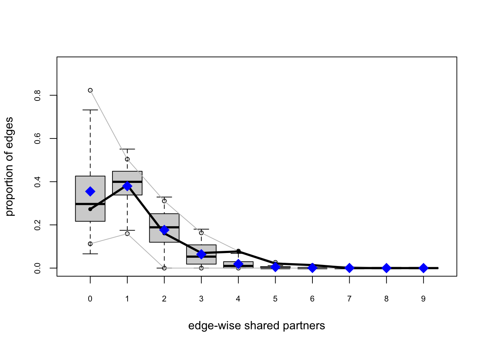
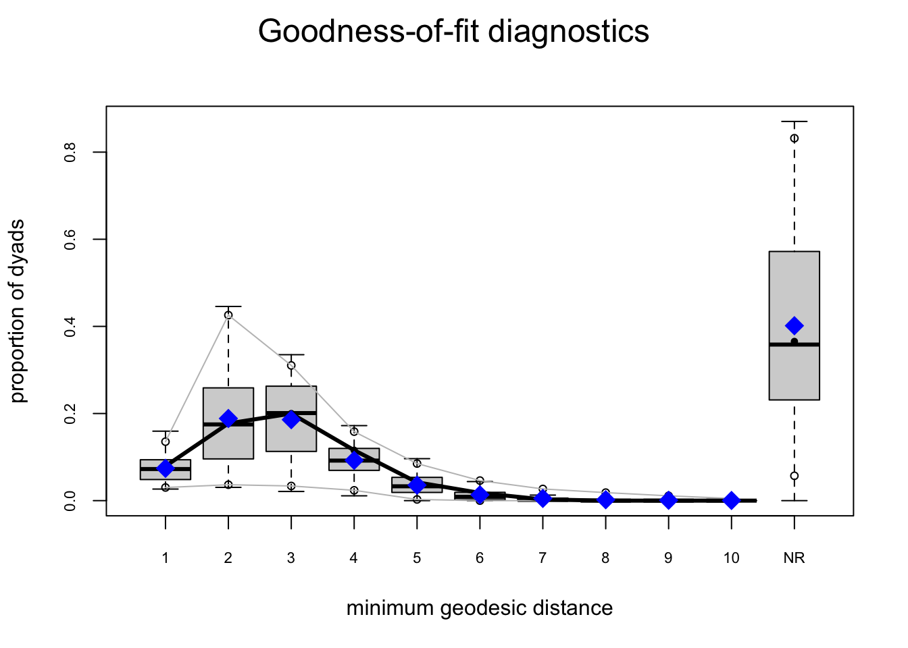
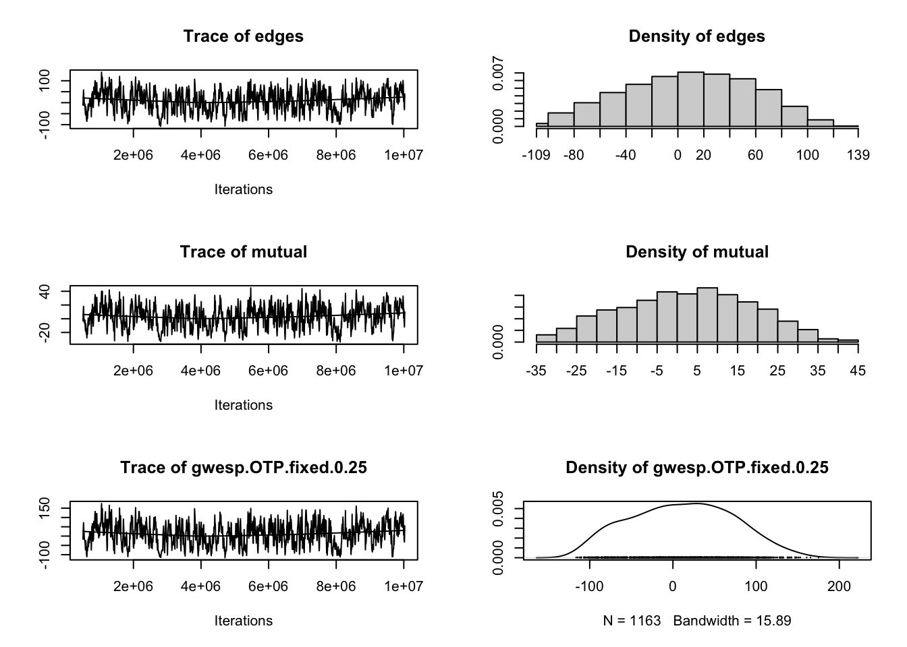
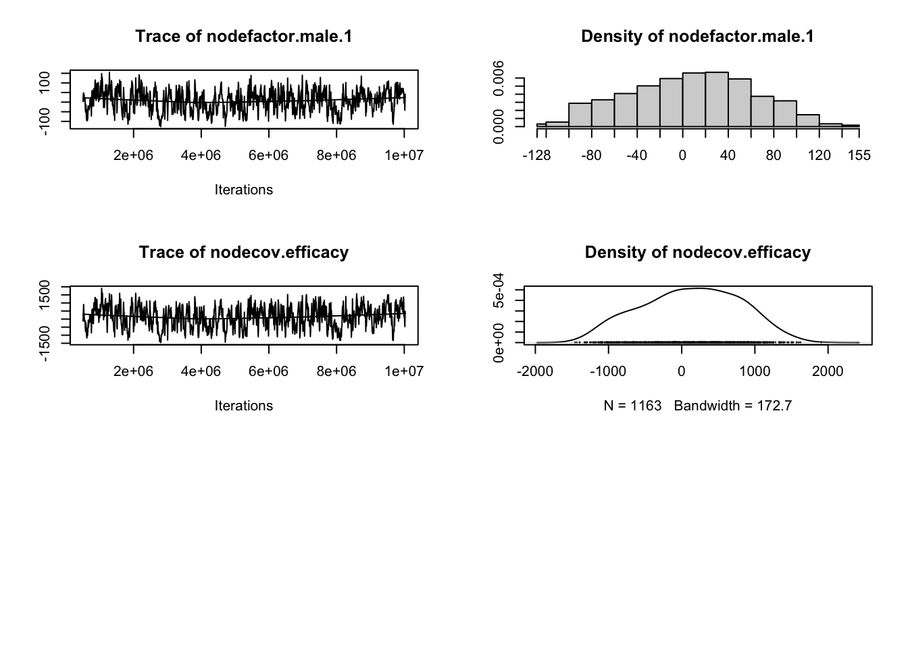
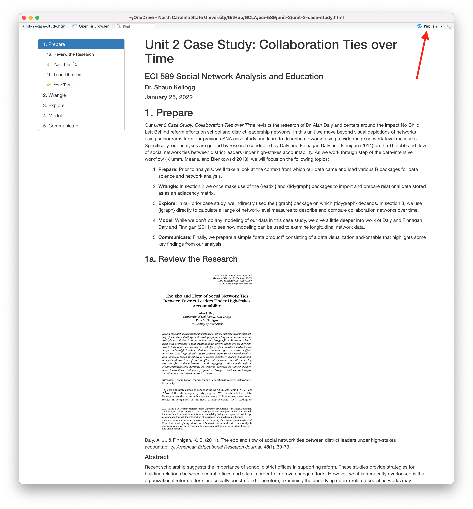

In Social Network Analysis and Education: Theory, Methods & Applications Carolan (2014) makes the following distinctions between mathematical and statistical approaches to social network analysis:
Mathematical approaches focus on what a network of actors “looks like” by describing the network using sociograms and/or network measures such as reciprocity, centrality, and density. However, these approaches “tend to regard the measured relationships and their strengths as accurately reflecting the real, final, or equilibrium status of the network.”
Statistical approaches, or statistical inference, on the other hand, focuses on “assessing the reproducibility or likelihood of an observed pattern” with the goal of explaining and ultimately predicting network structures and outcomes.
SNA Case Study: Birds of a Feather Lead Together is guided once again by the work of Alan Daly and colleagues and moves beyond “mathematical approaches” highlighted in previous labs and introduces the use of ERGMs as a “statistical approach” to network analysis. Specifically, we will try to replicate the P* models used in Chapter 9 of Carolan (2014) in order to test hypotheses about individual and network characteristics that may explain who school leaders select for collaboration and confidential exchanges.
More specifically, this case study will cover the following topics pertaining to each data-intensive workflow process:
Prepare: Prior to analysis, we’ll take a look at look at the study by Daly and Finnigan from whence our data was derived, formulate some research questions, and get introduced the {statnet} R package for ERGMs.
Wrangle: In section 2 we will learn how to work with matrices, how to dichotomize matrices, and how to convert matrices into more workable formats like our familiar edge-list.
Explore: In section 3, we once again use the {tidygraph} package and the companion {ggraph} package to calculate basic summary stats for our network and will try to replicate and ideally improve upon the sociogram from our readings.
Model: We wrap up our analysis in Section 4 by introducing exponential random graph modules used in Chapter 9 of Carolan (2014), learn to check how well our model “fits our data” and examine diagnostics that might indicate issues with our model.
Communicate: Finally, we’ll select, polish, and narrate a key finding from our analysis that helps to answer or research question(s).
1a. Review the Research
Daly, A. J., & Finnigan, K. S. (2011). The ebb and flow of social network ties between district leaders under high-stakes accountability. American Educational Research Journal, 48(1), 39-79.
Abstract
Recent scholarship suggests the importance of school district offices in supporting reform. These studies provide strategies for building relations between central offices and sites in order to improve change efforts. However, what is frequently overlooked is that organizational reform efforts are socially constructed. Therefore, examining the underlying reform-related social networks may provide insight into how relational structures support or constrain efforts at reform. This longitudinal case study draws upon social network analysis and interviews to examine the reform-related knowledge, advice, and innovation network structures of central office and site leaders in a district facing sanction for underperformance and engaging a districtwide reform. Findings indicate that over time, the networks increased the number of superficial interactions, and more frequent exchanges remained unchanged, resulting in a centralized network structure.
👉 Your Turn ⤵
Take a look at the article The Ebb and Flow of Social Network Ties Between District Leaders Under High-Stakes Accountability located in the lit folder of your files pane and answer the following questions:
What research questions were the authors of this study trying to address and why did they consider these questions important?
YOUR RESPONSE HERE
How were participants selected for this study and what was the rationale?
YOUR RESPONSE HERE
How did the authors collect social network data for this study and what specific information about actors and ties were collected?
YOUR RESPONSE HERE
What models were employed in this study and how was statistical inference used to address the research questions?
YOUR RESPONSE HERE
Research Questions
For this case study, we will be using school leadership data were collected at two school districts over 3 consecutive years that was used to answer the following research questions below:
Is there a relationship between the frequency of collaboration between school leaders and how often they turn to each other to discuss issues of a confidential nature?
Do school leaders prefer to collaborate with those with whom they have collaborated in the past, or is there some other reason?
Does gender or some other individual attribute predicts confidential exchanges between school leaders, or does some previous relation have a stronger effect?
Does collaboration between leaders explain one’s level of trust in one’s administrative colleagues?
Can we distinguish among different groups of school leaders based on how frequently they collaborate, and if so, are these groupings related to the level at which they work (school versus district)?
Of specific interest for our case study is research question 3 emphasized in bold text above, which asks whether individual attributes predicts tie formation. For example, are males more likely to engage in exchange confidential exchanges with other.
The tendency for individuals to be attracted to and interact with others who share similar characteristics is formally referred to as homophily or assortativity, but more commonly known by the “birds of a feather flock together” proverb.
Homophily has been well documented in education research across a variety of relation types including student friendships, teacher-pupil interactions, and membership in student cohorts (McPherson and Smith-Lovin 1987). Studies of homophily among student friendships, for example, date back to the 1920’s and provide strong evidence that students form ties based on sociodemographic similarities.
Data Collection
For each consecutive year, school district leaders were invited to complete a survey that collected individual:
Demographic information (e.g., gender, ethnicity, marital status, age, years of experiences);
Network relationships types (e.g., collaboration, confidential exchanges, energy, expertise, leaders approached for support, work-related issues, input, recognition, best practices, and innovation);
Frequency of interactions they have with those nominated individuals on a four-point frequency scale ranging from 1 (the least frequent) to 4 (1–2 times a week);
Leadership efficacy items were designed based on the Principal Efficacy Scale used in Daly et al. (2011) and Tschannen-Moran and Gareis’s (2004) studies. The efficacy scale includes 18 items rated on a 9-point Likert scale ranging from 1 (None at all) to 9 (A great deal);
Trust scale contains eight items rated on a 7-point Likert scale ranging from 1 (Strongly disagree) to 7 (Strongly agree) modified from Tschannen-Moran and Hoy (2003).
Analyses
Two modeling techniques unique to network analysis and demonstrated in Chapter 9 of Carolan (2014) are the quadratic assignment procedure (QAP) and Exponential Random Graph Models (ERGM):
QAP/MR: The quadratic assignment procedure (QAP) developed by Hubert (1987) and Krackhardt (1987b) tests the null hypothesis of no correlation between the two networks and adjusts for this dependence between networks by repeatedly permuting the order of rows and columns of one of the networks while keeping the other network intact. The QAP is based on regression models and permutation tests for valued (i.e., continuous) relational variables.
P1 and P* (P-Star): Both of these models are some of the first to make use of the ERGM, which provides a basis for comparing whether a network’s observed structural properties occur more frequently than you could expect from chance alone. ERGMs can be used to model ties in complete networks but do so in a manner that explains the presence (or absence) of ties as a function of individual-and/or network-level characteristics. While QAP and MR-QAP procedures control for network structure through permutations, these ERGMs attempt to explain it.
Key Findings
In response to research questions 1 & 2 from above, Carolyn reported that “while collaboration in year 1 does not significantly predict collaboration in year 3, confidential exchanges in year 1 does” and suggested that “collaboration among school leaders provides an important foundation for more sensitive, perhaps even deeper, relations (e.g., confidential exchanges) at a later point in time.”
👉 Your Turn ⤵
For our Learning Lab 4 case study, we focus specifically on generative processes, or micro-level mechanisms, the might help explain who school leaders select to collaborate with or engage in confidential exchanges. Review Chapter 9 of SNA and Education and report out on the findings from the ERGM analysis in response to Research Question 3 below:
Does gender or some other individual attribute predicts confidential exchanges between school leaders, or does some previous relation have a stronger effect?
YOUR RESPONSE HERE
Based on what you know about networks and the context so far, write another research question or hypothesis that can be tested using ERGMs:
YOUR RESPONSE HERE
Later you’ll have a chance to empirically test it by the end of this case study.
1b. Load Libraries
Recall that packages, or libraries, are shareable collections of R code that can contain functions, data, and/or documentation and extend the functionality of R. You can always check to see which packages have already been installed and loaded into RStudio Cloud by looking at the the Files, Plots, & Packages Pane in the lower right hand corner.
statnet 📦
Similar to the collection of packages contained in the {tidyverse} package, the Statnet Team (Pavel N. Krivitsky et al. 2003-2020) has developed a suite of R packages for the management, exploration, statistical analysis, simulation and vizualization of network data. The statistical modeling framework used in {statnet} relies on Exponential-family Random Graph Models (ERGMs).
As noted in the statnet tutorial by the same authors, the exponential-family random graph models (ERGMs) are a general class of models based in exponential-family theory for specifying the probability distribution for a set of random graphs or networks. Within this framework, one can—among other tasks:
Define a model for a network that includes covariates representing features like homophily, mutuality, triad effects, and a wide range of other structural features of interest;
Obtain maximum-likehood estimates for the parameters of the specified model for a given data set;
Test individual coefficients, assess models for convergence and goodness-of-fit and perform various types of model comparison; and
Simulate new networks from the underlying probability distribution implied by the fitted model.
👉 Your Turn ⤵
Let’s load the {statnet} package that we’ll be using in the Model section of our case study for bullets 1-3 above, as well as the following packages that will be using for our network analysis:
tidyverse
readxl
igraph
tidygraph
ggraph
skimr
janitor
# YOUR CODE HERElibrary(readxl)library(tidyverse)
── Attaching core tidyverse packages ──────────────────────── tidyverse 2.0.0 ──
✔ dplyr 1.1.4 ✔ readr 2.1.5
✔ forcats 1.0.0 ✔ stringr 1.5.1
✔ ggplot2 3.5.1 ✔ tibble 3.2.1
✔ lubridate 1.9.3 ✔ tidyr 1.3.1
✔ purrr 1.0.2
── Conflicts ────────────────────────────────────────── tidyverse_conflicts() ──
✖ dplyr::filter() masks stats::filter()
✖ dplyr::lag() masks stats::lag()
ℹ Use the conflicted package (<http://conflicted.r-lib.org/>) to force all conflicts to become errors
library(igraph)
Attaching package: 'igraph'
The following objects are masked from 'package:lubridate':
%--%, union
The following objects are masked from 'package:dplyr':
as_data_frame, groups, union
The following objects are masked from 'package:purrr':
compose, simplify
The following object is masked from 'package:tidyr':
crossing
The following object is masked from 'package:tibble':
as_data_frame
The following objects are masked from 'package:stats':
decompose, spectrum
The following object is masked from 'package:base':
union
library(tidygraph)
Attaching package: 'tidygraph'
The following object is masked from 'package:igraph':
groups
The following object is masked from 'package:stats':
filter
library(ggraph)library(skimr)
Attaching package: 'skimr'
The following object is masked from 'package:tidygraph':
focus
library(janitor)
Attaching package: 'janitor'
The following objects are masked from 'package:stats':
chisq.test, fisher.test
library(statnet)
Loading required package: tergm
Loading required package: ergm
Loading required package: network
'network' 1.18.2 (2023-12-04), part of the Statnet Project
* 'news(package="network")' for changes since last version
* 'citation("network")' for citation information
* 'https://statnet.org' for help, support, and other information
Attaching package: 'network'
The following objects are masked from 'package:igraph':
%c%, %s%, add.edges, add.vertices, delete.edges, delete.vertices,
get.edge.attribute, get.edges, get.vertex.attribute, is.bipartite,
is.directed, list.edge.attributes, list.vertex.attributes,
set.edge.attribute, set.vertex.attribute
'ergm' 4.6.0 (2023-12-17), part of the Statnet Project
* 'news(package="ergm")' for changes since last version
* 'citation("ergm")' for citation information
* 'https://statnet.org' for help, support, and other information
'ergm' 4 is a major update that introduces some backwards-incompatible
changes. Please type 'news(package="ergm")' for a list of major
changes.
Loading required package: networkDynamic
'networkDynamic' 0.11.4 (2023-12-10?), part of the Statnet Project
* 'news(package="networkDynamic")' for changes since last version
* 'citation("networkDynamic")' for citation information
* 'https://statnet.org' for help, support, and other information
Registered S3 method overwritten by 'tergm':
method from
simulate_formula.network ergm
'tergm' 4.2.0 (2023-05-30), part of the Statnet Project
* 'news(package="tergm")' for changes since last version
* 'citation("tergm")' for citation information
* 'https://statnet.org' for help, support, and other information
Attaching package: 'tergm'
The following object is masked from 'package:ergm':
snctrl
Loading required package: ergm.count
'ergm.count' 4.1.2 (2024-06-15), part of the Statnet Project
* 'news(package="ergm.count")' for changes since last version
* 'citation("ergm.count")' for citation information
* 'https://statnet.org' for help, support, and other information
Loading required package: sna
Loading required package: statnet.common
Attaching package: 'statnet.common'
The following object is masked from 'package:ergm':
snctrl
The following objects are masked from 'package:base':
attr, order
sna: Tools for Social Network Analysis
Version 2.7-2 created on 2023-12-05.
copyright (c) 2005, Carter T. Butts, University of California-Irvine
For citation information, type citation("sna").
Type help(package="sna") to get started.
Attaching package: 'sna'
The following objects are masked from 'package:igraph':
betweenness, bonpow, closeness, components, degree, dyad.census,
evcent, hierarchy, is.connected, neighborhood, triad.census
Loading required package: tsna
'statnet' 2019.6 (2019-06-13), part of the Statnet Project
* 'news(package="statnet")' for changes since last version
* 'citation("statnet")' for citation information
* 'https://statnet.org' for help, support, and other information
unable to reach CRAN
2. WRANGLE
For our data wrangling this week, we’ll focus on working with network data stored as an adjacency matrix. Our primary goals for this section are learning how to:
Import Data. In this section, we use the {readxl} package from the tidyverse to read in a matrix and node attributes.
Dichotomize a Matrix. As described in Chapter 9, we’ll recode our edge values to 1s and 0s changing our valued matrix to a binary matrix.
Create Network Graph. Finally, we’ll convert our matrix to an edge-list and store both our edges and node attributes as a network igraph object in preparation for analysis.
2a. Import Data
One of our primary goals is to replicate the ERGM analysis from Chapter 9: Network Data and Statistical Models (Carolan 2014). Specifically, we’ll aim to reproduce the results from Table 9.4. Results of P1 and P*Analyses for the Dichotomized and Directed School Leaders Confidential Exchanges Network Year 3.
To do so, we’ll need to import two Excel files from the Social Network Analysis and Education companion site. The first file contains our edges stored as a square matrix (more on this later) and the second file is a standard rectangular data frame that contains attributes for each node, i.e. school leaders. These files are included in the data folder of your R Studio project. A description of each file from the companion website is linked above and each data file is linked below:
School Leaders Data Chapter 9_d. This adjacency matrix reports on “confidential help” ties among 43 school leaders in year 3 of a three-year study. This is a directed valued (weighted) network measured on five-point scale ranging from 0 to 4, with higher values indicating more frequent collaborations (1–2 times/week). These data are used throughout Chapter 9.
School Leaders Data Chapter 9_e. This rectangular matrix consists of four attribute vectors for 43 school leaders. Following the first ID column, the matrix includes an efficacy score, trust score, and indicators for whether one works at the district-level and is male (1 = yes, 0 = no). These attribute variables will be used as covariates in our ERGMs later in this walkthrough.
Since we are working with Excel files, we’ll need to use the read_excel() function from {readxl} tidyverse package to import our data. Let’s import the School Leaders Data Chapter 9_e.xlsx node file located in the data/ folder first:
Note that we specified the ID column as “text” and the remaining columns as “numeric.” By default, the readxl() function would have recognized each column as numeric, but the first column indicates the “names” for each school leader and we’ll be using this column to assign names to our columns and rows for our adjacency matrix in just a bit.
👉 Your Turn ⤵
Recall from above that our relations, or edges, are stored as a valued adjacency matrix in which columns and rows consist of the same actors and each cell contains information about the tie between each pair of actors. In our case, the tie is a directed and valued “arc” where the value indicates the strength of the relationship.
Use the read_excel() function to import the School Leaders Data Chapter 9_d.xlsx file, add an argument setting the column names to FALSE since our file is a simple matrix with no header or column names, and assign the matrix to a variable named leader_matrix:
Hint: Type ?read_excel into the console and check the arguments section to find the name of the argument used to set column headers.
#YOUR CODE HEREleader_matrix <-read_excel("data/School Leaders Data Chapter 9_d.xlsx", col_names =FALSE)
Is our network a square matrix? What does this tell you about the number of nodes in our network?
YOUR RESPONSE HERE
Does our network contain self-loops? How do you know?
YOUR RESPONSE HERE
What do the values in each cell of our matrix indicate?
YOUR RESPONSE HERE
2b. Dichotomize Matrix
Since one of our goals is a crude replication of the analysis demonstrated in Chapter 9, and since working with “valued networks” is a little more complex than binary networks that simply indicate the presence or absence of a tie, we will need to “dichotomize” our matrix. In practice this simply entails converting our valued matrix to a binary matrix with cells containing just 1s or 0s.
In their article, Valued Ties Tell Fewer Lies: Why Not To Dichotomize Network Edges With Thresholds, Thomas and Blitzstein (2011) highlight several reasons why the dichotomization procedure is appealing in an investigation aside from convenience and simplicity:
Use of Exclusively Binary Methods. Several classes of models have been designed to incorporate binary information directly, including the exponential random graph model.
Ease of Input and Data Collection. The need to classify continuously-valued quantities into a set of discrete groups is widespread throughout all of science and technology, particularly because of the associated need to make clear decisions based on this information.
Ease of Output in Graphical Representations. The visual appeal of graphs and networks has contributed to much of the field’s attention in the past decade. When plotting a graphical structure, a clever choice of threshold can illuminate which nodes are most central, which connections the most vital.
Sparsity of Structure. In data where there are very few natural zeroes (if any), di- chotomization provides a way to select for a small number of connections which are thought to be of the greatest importance to the system, or to nominate a number of ties for more in-depth study.
Binning To Address Nonlinearity and Reduce Noise. If there is a nonlinear relationship in the data, binning the data into distinct ordinal categories has many advantages, namely, the reduction of total mean-squared error, and a corresponding increase in power for detecting a true non-zero relationship over an improperly specified linear analysis.
As the title of their article suggests, however, Thomas and Blitzstein argue that the motivations for dichotomization should be revisited as dichotomization produces a range of problematic issues.
With that in mind, and before we can dichotomize our “matrix,” we first need to convert it to a matrix object recognized by R using the as.matrix() function. We can then check to data format of our leader_matrix using the class() function:
Both the collaboration and confidential help network data were dichotomized by recoding values originally coded as a 3 and 4 recoded to 1, indicating the presence of a directed tie for both relations, and zero otherwise.
To dichotomize our our matrix, the following code will “assign” 0’s to all values in our matrix that are less than or equal to 2, and 1’s to all values that are greater the or equal to 3:
Before we can convert to an edge-list, we will also need to add the names of our nodes to the columns and rows of our matrix. These are stored in the ID column of our leader_node data frame. We can use the $ operator to select these names and assign to our leader_matrix using the rownames() and colnames() functions respectively:
Recall that edge-lists contain a row for each dyad consisting of at minimum two columns with the name of each actor, and which conveniently can also contain other information or attributes about the relationship such as edge weight, timestamps, or other contextual information as demonstrated in Learning Lab 1.
Edge-lists also have the advantage of being easier to work with when using network packages in R.
Get Edges
The {igraph} package introduced in Learning Lab 1 has a convenient get.data.frame() function for extracting an edge list from a matrix, but first we need to convert our matrix to an igraph network object.
Note that we included the diag = FALSE argument which converts all values along the diagonal to 0s, thereby removing self-loops. I believe they may have been included when calculating the network descriptives included in Table 9.1, and our own descriptives may not match exactly, but we’ll need to remove these from our network for the ERGM analysis so this will save us a step.
Now we can use the get.data.frame() function to covert our matrix to a standard edge-list:
Recall from Learning Lab 2 that we introduced the {tidygraph} package for preparing and summarizing our Twitter network. Tidygraph includes the full functionality of igraph in a tidy API giving you access to almost all of the dplyr verbs plus a few more, developed for use with relational data.
Similar to Learning Lab 2, use the tbl_graph() function to convert our leader_edges and leader_nodes data frames into a network graph object, by including the following arguments and supplying the appropriate code:
edges = expects a data frame, in our case leader_edges, containing information about the edges in the graph. The nodes of each edge must either be in a to and from column, or in the two first columns like the data frame we provided.
nodes = expects a data frame, in our case leader_nodes, containing information about the nodes in the graph. If to and/or from are characters or names, like in our data frames, then they will be matched to the column named according to node_key in nodes, if it exists, or matched to the first column in the node list.
directed = specifies whether the constructed graph be directed.
# YOUR CODE HEREleader_graph <-tbl_graph(edges = leader_edges,nodes = leader_nodes,directed =TRUE)leader_graph
Congrats! You made it to the end of data wrangling section and are ready to start analysis!
3. EXPLORE
In Section 3, we use the {tidygraph} package for retrieving network descriptives and the {ggraph} package to create a network visualization to help illustrate these metrics. Specifically, in this section we will:
Examine Basic Descriptives. We focus primarily on actors and edges in this walkthrough, including whether or not ties were reciprocated and node degree, an important and fairly intuitive measure of centrality.
Make a Sociogram. Finally, we wrap up the explore phases by learning to plot a network and tweak key elements like the size, shape, and position of nodes and edges to better at communicating key findings.
3a. Examine Descriptives
As noted in SNA and Education (Carolan 2014), many analyses of social networks are primarily descriptive and aim to either represent the network’s underlying social structure through data-reduction techniques or to characterize network properties through network measures.
In the analyses described in Chapter 9, descriptives were limited to the mean and standard deviation for: in-degree, out-degree, trust and efficacy measures. The proportion of male leaders was also reported. For section 3a, let’s see if we can reproduce these descriptives.
Calculate Node Degree
Recall that degree is the number of ties to and from an ego, or in the case of a “simple graph” like ours, degree is simply the number of people to whom someone is connected. In a directed network, in-degree is the number of connections or ties received, whereas out-degree is the number of connections or ties sent.
The activate() function from the {tidygraph} package allows us to treat the nodes in our network object as if they were a standard data frame to which we can then apply tidyverse functions such as select(), filter(), and mutate().
We can use the mutate() functions to create new variables for nodes such as measures of degree, in-degree, and out-degree using the centrality_degree() function in the {tidygraph} package.
Run the following code to add in- and out-degree measures to each of our nodes and examine the output:
We now see that, in addition to the previously included attributes trust and efficacy, in-degree and out-degree measures have been added to the nodes in our network. But what if we also want to know to total number of “alters” each “ego” is connected to, i.e. the total number of individuals each school leader are connected to?
Modify the code below to calculate degree for each school leader in our network. Hint:centrality_degree is a wrapper for igraph::degree() and the mode = argument can be found in the corresponding help documentation.
We can also use the activate() function combined with the as_tibble() function introduced in our previous Learning Lab to extract our new measures to a separate data frame we’ll call node_measures so we can inspect our nodes individually and later use to calculate some summary stats:
Now let’s view some basic summary statistics for each of the variables using the handy summary() function included in the R {base} package and the skim() functions from the {skimr} package.
summary(node_measures)
id efficacy trust district_site
Length:43 Min. :4.610 Min. :3.630 Min. :0.0000
Class :character 1st Qu.:5.670 1st Qu.:4.130 1st Qu.:0.0000
Mode :character Median :6.780 Median :4.780 Median :0.0000
Mean :6.649 Mean :4.783 Mean :0.4186
3rd Qu.:7.470 3rd Qu.:5.440 3rd Qu.:1.0000
Max. :8.500 Max. :5.880 Max. :1.0000
male degree in_degree out_degree
Min. :0.0000 Min. : 0.000 Min. :0.000 Min. : 0.000
1st Qu.:0.0000 1st Qu.: 3.000 1st Qu.:2.000 1st Qu.: 1.000
Median :0.0000 Median : 4.000 Median :3.000 Median : 2.000
Mean :0.4419 Mean : 6.651 Mean :3.326 Mean : 3.326
3rd Qu.:1.0000 3rd Qu.: 9.500 3rd Qu.:5.000 3rd Qu.: 4.000
Max. :1.0000 Max. :27.000 Max. :8.000 Max. :20.000
skim(node_measures)
Data summary
Name
node_measures
Number of rows
43
Number of columns
8
_______________________
Column type frequency:
character
1
numeric
7
________________________
Group variables
None
Variable type: character
skim_variable
n_missing
complete_rate
min
max
empty
n_unique
whitespace
id
0
1
1
2
0
43
0
Variable type: numeric
skim_variable
n_missing
complete_rate
mean
sd
p0
p25
p50
p75
p100
hist
efficacy
0
1
6.65
1.10
4.61
5.67
6.78
7.47
8.50
▅▅▃▇▃
trust
0
1
4.78
0.71
3.63
4.13
4.78
5.44
5.88
▆▆▅▆▇
district_site
0
1
0.42
0.50
0.00
0.00
0.00
1.00
1.00
▇▁▁▁▆
male
0
1
0.44
0.50
0.00
0.00
0.00
1.00
1.00
▇▁▁▁▆
degree
0
1
6.65
5.80
0.00
3.00
4.00
9.50
27.00
▇▃▂▁▁
in_degree
0
1
3.33
2.12
0.00
2.00
3.00
5.00
8.00
▅▇▂▅▂
out_degree
0
1
3.33
4.26
0.00
1.00
2.00
4.00
20.00
▇▁▁▁▁
It looks like our summary stats for Year 3 confidential exchanges network and attribute data are pretty close to those reported in Table 9.1 copied from Carolan (2014). For example, our mean total efficacy and trust scores were 6.65 and 4.78 respectively, compared to 6.64 and 4.77 as reported in Chapter 9.
The average in/out-degree for our school leaders data is 3.26, however, which is a little lower than that reported by Carolyn. Again, this is likely a function of our removal of self-loops. To test this theory, we could simply change the diag = FALSE argument added to the graph.adjacency() function above to TRUE to include self-loops and then try rerunning all the code above.
School/District-Level Stats
Since we are now working with a standard data frame, we can also apply {dyplr} functions like group_by() and summarise() to calculate basic summary stats such as counts, mean, and standard deviation as follows:
# A tibble: 2 × 4
district_site n mean sd
<dbl> <int> <dbl> <dbl>
1 0 25 2.36 1.58
2 1 18 4.67 2.09
We see that our measures are pretty close, but not an exact match. Again, this is likely due to the self-loops we excluded. For example, our average in-degree for district-level (coded “1”) and school-level (coded “0”) leaders is 4.66 and 2.36 respectively, but reported as 4.72 and 2.64 by Carolan (2014).
👉 Your Turn ⤵
Use the code chunk below and additional chunks if needed to try and replicate the school and district level findings for out-degree, trust and efficacy measures.
# A tibble: 2 × 4
district_site n mean sd
<dbl> <int> <dbl> <dbl>
1 0 25 7.02 0.953
2 1 18 6.13 1.12
How close your result to those reported by Carolyn Table 9.1?
YOUR RESPONSE HERE
3b. Visualize Network Properties
In Chapter 9, Carolan (2014) depicts a directed and dichotomous sociogram of the collaboration network for year 3 is shown in .
👉 Your Turn ⤵
Try creating a Year 3 Confidential Exchange Network by modifying the code below and tweaking the included function/arguments or adding new ones for layouts, nodes, and edges to make our plot either more “aesthetically pleasing” or more purposeful in what it’s trying to communicate.
After you are satisfied with your sociogram, answer the following questions?
How is the Year 3 confidential exchange network similar to the collaboration network? How is it different?
YOUR RESPONSE HERE
Congrats! You made it to the end of the Explore section and are ready to learn a little ab out modeling network selection processes using ERGMs! Before proceeding further, knit your document and check to see if you encounter any errors.
4. MODEL
Recall from Carolan (2014) that network models and the questions they are designed to address are categorized into three different analytical emphases:
Relationship-level models that focus on the ties between actors in complete networks;
Models that predict individual actors’ attributes; and,
Actor-level models that emphasize the differences within and among groups of actors within a complete network.
Exponential Random Graph Models fall into category 1 and are relationship-level models that focus on how formation of dyadic ties within a complete relational network can be explained by both structural and attribute variables. ERGMs provide a means to compare whether a network’s observed structural properties occur more frequently than you could expect from chance alone. More specifically, ERGMS provide a way to determine whether observed network properties like reciprocity and assortativity occur by chance as a result of other network properties.
While the technical aspects of estimating ERGMs are complex, their interpretation is pretty straightforward. In this section we are interested exploring how these models can be used to make inferences about the social processes at work in the School Leaders data. For example, in this section we will explore the following questions posed in Chapter 9:
Reciprocity. If one school leader turns to another to discuss something confidential, is the latter likely to reciprocate?
Transitivity. Are school leaders more likely to confide in someone if they both confide in the same school leader?
Attribute Effect. Do a leader’s gender and efficacy score, predict a confidential exchange between two leaders?
4a. Loading Network Data
As we’ve discovered in previous learning labs, network data can come in many different forms — ties can be stored as edgelists or matrices, saved as .csv or excel files, and converted to a variety of network R objects. Attributes for the nodes, ties and dyads can also take various forms and be added in various ways to objects in R. For the {ergm} package, however, data will need to be transformed into a object of the class “network” — the format that statnet uses to store and work with network data.
Fortunately, we have already prepared our data for quick conversion to a network object and can supply just a couple arguments to the as.network() function from the {network} package used by statnet:
x = a matrix giving the network structure in adjacency, incidence, or edgelist form;
vertices = an optionaldata.frame containing the vertex attributes. The first column is assigned to the "vertex.names" and additional columns are used to set vertex attributes using their column names.
Similar to the tbl_graph function from {tidygraph} that we used above, let’s add our leader_edges edge-list and our leader_nodes data frame as the x = and vertices = arguments in the as.network() function and assign to a new object called leader_network:
Note that we could also have supplied our leader_matrix as the first argument, but using and edgelist vastly simplifies the process of adding node attributes.
Let’s also check the be sure that our leader_network is indeed a network object by using the class() function to identify object type:
class(leader_network)
[1] "network"
So far so good! Let’s start building our first ERGM model!
4b. Estimate the ERGM
We’ll begin by running a simple model both to demonstrate the most commonly used functions for ERGMs and also to replicate the approach in Chapter 9 of Carolan (2014).
The syntax for specifying a model in the ergm package follows R’s standard formula convention: my_network ~ ergm_term_1 + ergm_term_2 + ergm_term_3 and so forth.
This syntax is used for both the summary and ergm functions.
The summary function simply returns the numerical values of the network statistics in the model.
The ergm function estimates the model with those statistics.
It is good practice to run a summmary command on any model before fitting it with ergm. This is the ERGM equivalent of performing some descriptive analysis on your covariates. This can help you make sure you understand what the term represents, and it can help to flag potential problems that will lead to poor modeling results.
Network Structure Parameters
Let’s start with with a simple model similar to the P1 model in Table 9.4. This model contains the required ergm-term edges that represents the total number of edges in the network, and the ergm-term mutual that examines the tendency for ties to be reciprocated, i.e. “mutuality”.
summary(leader_network ~ edges + mutual)
edges mutual
143 36
We see from our summary that our leader_network consists of 143 edges and 36 reciprocated dyads.
Since the ergm() function uses a stochastic MCMC-based estimation algorithm, use the set.seed() function and set the value to 2022 (note this could be any number) so we produce the same results each time.
Now let’s estimate our model, save the results as ergm_mod_1, and use the summary() function again to take a look at our estimates. Also,
Warning: 'glpk' selected as the solver, but package 'Rglpk' is not available;
falling back to 'lpSolveAPI'. This should be fine unless the sample size and/or
the number of parameters is very big.
summary(ergm_mod_1)
Call:
ergm(formula = leader_network ~ edges + mutual)
Monte Carlo Maximum Likelihood Results:
Estimate Std. Error MCMC % z value Pr(>|z|)
edges -3.1062 0.1170 0 -26.54 <1e-04 ***
mutual 3.1118 0.2766 0 11.25 <1e-04 ***
---
Signif. codes: 0 '***' 0.001 '**' 0.01 '*' 0.05 '.' 0.1 ' ' 1
Null Deviance: 2503.6 on 1806 degrees of freedom
Residual Deviance: 893.3 on 1804 degrees of freedom
AIC: 897.3 BIC: 908.3 (Smaller is better. MC Std. Err. = 0.9914)
Since ERGMs predict the presence of a network tie, with estimates indicating the importance of each to the presence of a tie, estimated coefficients can be explained in terms similar to logistic regression. That is, positive significant coefficients indicate that the corresponding parameters in the observed network (e.g. reciprocated ties between school leaders), controlling for all other parameters in the model, occur more than would be expected by chance, thus increasing the likelihood that a tie will occur, and vice-versa for negative coefficients.
After several iterations, we see that our model finally converges and suggest that the estimates for our edges and mutual terms are statistically significant. The negative estimate for the edge paramter, as noted by Carolan (2014), implies that the probability of a confidential exchange tie in year 3 is relatively low. The reciprocity parameter, on the other hand, is 3.11 in our model, and indicates a strong tendency for confidential-exchange ties to be reciprocated.
Now let’s add an ergm-term for transitivity. Modeling transitivity, or the “friend of a friend” phenomenon in social networks, is both computationally intensive because of the all the possible “triangles” in a directed network, and also very prone to model degeneration, i.e. when models that fail to converge by reaching a value expected by the parameters included in the model.
Ergm-terms for transitivity such as triangles and transitive in particular are prone to model degeneration. Fortunately, the {ergm} package includes a “more robust way of modeling triangles: the geometrically-weighed edgewise shared partner term (GWESP).”
Let’s add the gwesp term to our model with the suggested defaults from the Statnet Tutorial section on What it looks like when a model fails and take a look at the summary first:
As you can see, we have 202 transitive triad types.
Now lets run our model including transitivity and take a look at our estimates. Note that this make take a couple minutes to run. If you’d like to watch the number of iterations of the model set message = TRUE.
Call:
ergm(formula = leader_network ~ edges + mutual + gwesp(0.25,
fixed = T))
Monte Carlo Maximum Likelihood Results:
Estimate Std. Error MCMC % z value Pr(>|z|)
edges -3.9736 0.1529 0 -25.980 <1e-04 ***
mutual 2.3000 0.3280 0 7.011 <1e-04 ***
gwesp.OTP.fixed.0.25 1.0727 0.1311 0 8.185 <1e-04 ***
---
Signif. codes: 0 '***' 0.001 '**' 0.01 '*' 0.05 '.' 0.1 ' ' 1
Null Deviance: 2503.6 on 1806 degrees of freedom
Residual Deviance: 805.1 on 1803 degrees of freedom
AIC: 811.1 BIC: 827.6 (Smaller is better. MC Std. Err. = 0.3991)
Contrary to the analysis in Chapter 9, our model so far suggest that there is a tendency toward transitivity, that is a confidential exchange is likely to occur between two people who both have a confidential exchange with the same individual.
At this point, however, we have only focused on structural mechanisms inherent to networks themselves, or “global features” of the graph independent of actors, and have not looked at individual attributes among actors that may be shaping out network.
Actor Attribute Parameters
As noted by Carolan (2014), ERGMs have advanced to the point where actor attributes, or actor-level covariates, can now be incorporated into model estimation, such as individuals’ demographic (e.g., gender) or behavioral (e.g., efficacy) characteristics. These two attributes examined in Chapter 9 with leadership efficacy measured by survey items based on the Principal Efficacy Scale.
The attributes were included as both sender and receiver effects, which again can be very computationally intensive and thus timely to run, while sometimes prone to model degeneracy without some model fine tuning.
To simplify this approach, I’ve include these attributes using the nodefactor() and nocov() ergm-terms respectively which allow us to test whether those who are Male or have higher efficacy scores are more likely to either send or receive a confidential exchange.
Call:
ergm(formula = leader_network ~ edges + mutual + gwesp(0.25,
fixed = T) + nodefactor("male") + nodecov("efficacy"))
Monte Carlo Maximum Likelihood Results:
Estimate Std. Error MCMC % z value Pr(>|z|)
edges -4.39525 0.39747 0 -11.058 <1e-04 ***
mutual 2.29634 0.30751 0 7.467 <1e-04 ***
gwesp.OTP.fixed.0.25 1.05315 0.13056 0 8.066 <1e-04 ***
nodefactor.male.1 0.10954 0.06262 0 1.749 0.0802 .
nodecov.efficacy 0.02495 0.02768 0 0.901 0.3674
---
Signif. codes: 0 '***' 0.001 '**' 0.01 '*' 0.05 '.' 0.1 ' ' 1
Null Deviance: 2503.6 on 1806 degrees of freedom
Residual Deviance: 802.7 on 1801 degrees of freedom
AIC: 812.7 BIC: 840.2 (Smaller is better. MC Std. Err. = 0.7829)
Although there appears to be a very slight, though not statistically significant tendency towards male leaders being more likely to send or receive ties, the primary drivers of network formation appear to be structural features of the network including reciprocity and transitivity.
Sadly, we were not able to replicate the findings from Carolan (2014), but we also did not replicate their model exactly, nor did we fine tune our model parameters. Regardless, this provided a practical exercise for demonstrating ERGMs.
👉 Your Turn ⤵
Before moving on to checking the goodness of fit for our final model, try testing to see if shared characteristics among school leaders might help explain tie formation. To test for homophily among gender or location, the ergm() function includes a nodematch() argument similar to nodefactor() used above that could be used to answer the following question:
Controlling for edges, reciprocity, and transitivity, are school leaders more likely to confide in colleagues of their own gender or who work at the same district-site level?
Call:
ergm(formula = leader_network ~ edges + mutual + gwesp(0.25,
fixed = T) + nodematch("male") + nodematch("district_site"))
Monte Carlo Maximum Likelihood Results:
Estimate Std. Error MCMC % z value Pr(>|z|)
edges -4.2240 0.1814 0 -23.287 <1e-04 ***
mutual 2.1888 0.2989 0 7.323 <1e-04 ***
gwesp.OTP.fixed.0.25 1.0303 0.1358 0 7.589 <1e-04 ***
nodematch.male -0.1188 0.1642 0 -0.724 0.469
nodematch.district_site 0.6124 0.1276 0 4.801 <1e-04 ***
---
Signif. codes: 0 '***' 0.001 '**' 0.01 '*' 0.05 '.' 0.1 ' ' 1
Null Deviance: 2503.6 on 1806 degrees of freedom
Residual Deviance: 780.7 on 1801 degrees of freedom
AIC: 790.7 BIC: 818.2 (Smaller is better. MC Std. Err. = 0.521)
Once you’ve checked the summary of your model estimates, write your interpretation of the results below:
YOUR RESPONSE HERE
We’ve only scratched the surface for the number of network and node attributes properties that can be tested using ERGMs. Take a look at a table of common ergm-terms or type “ergm-terms” into the help menu of the files pane for some additional examples.
4c. Check Model Fit
One test of whether an ergm model is a “good fit” for the data is “how well it reproduces the observed global network properties that are not in the model.” This can be accomplished by choosing a network statistic that is not in the model, and comparing the value of this statistic observed in the original network to the distribution of values we get in simulated networks from our model, using the gof() function to test the goodness-of-fit.
The GOF Function
The gof() function is a bit different than the summary() and ergm() functions, in that it only takes 3 ergm-terms as arguments: degree, esp (edgwise share partners), and distance (geodesic distances). Each of these terms captures an aggregate network distribution, at either the node level (degree), the edge level (esp), or the dyad level (distance).
Let’s go ahead and run the gof() function on our ergm_3 model and plot the results:
ergm_3_gof <-gof(ergm_3)plot(ergm_3_gof)





Overall, the model appears to fit reasonably well in that black line in our charts (the actual observed network measures) closely follows the aggregate measures generated from the simulations, or permutations of our network.
Check MCNC Diagnostics
One final check on our model is to examine the Monte-Carlo Markov Chain (MCMC) diagnostics to make sure our model is not heading of in the wrong direction and likely to never produce a network similar to what was observed, which is referred to as “model degeneracy.” As the statnet authors note:
When a model is not a good representation of the observed network, the simulated networks produced in the MCMC chains may be far enough away from the observed network that the estimation process is affected. In the worst case scenario, the simulated networks will be so different that the algorithm fails altogether.
Fortunately, our models did not fail to converge, the AIC and BIC indicators seemed to improve with each term added to the model, and the goodness-of-fit seemed to somewhat mirror the global features of our network.
Let run the mcmc.diagnostics() function on our final model anyways and check the results:
mcmc.diagnostics(ergm_3)


Sample statistics summary:
Iterations = 507904:10027008
Thinning interval = 8192
Number of chains = 1
Sample size per chain = 1163
1. Empirical mean and standard deviation for each variable,
plus standard error of the mean:
Mean SD Naive SE Time-series SE
edges 8.603 49.15 1.4412 3.488
mutual 2.878 16.22 0.4755 1.168
gwesp.OTP.fixed.0.25 10.631 61.52 1.8039 4.407
nodefactor.male.1 7.088 55.23 1.6194 4.094
nodecov.efficacy 122.049 668.40 19.5995 47.802
2. Quantiles for each variable:
2.5% 25% 50% 75% 97.5%
edges -82.00 -27.00 10.00 47.00 95.95
mutual -27.00 -9.00 3.00 15.00 33.00
gwesp.OTP.fixed.0.25 -98.51 -36.58 11.03 56.39 128.44
nodefactor.male.1 -95.00 -33.00 9.00 47.00 104.95
nodecov.efficacy -1104.72 -364.49 149.63 642.15 1336.39
Are sample statistics significantly different from observed?
edges mutual gwesp.OTP.fixed.0.25 nodefactor.male.1
diff. 8.60275150 2.8779020 10.63111524 7.0877042
test stat. 2.46632935 2.4650007 2.41231381 1.7311433
P-val. 0.01365058 0.0137013 0.01585163 0.0834262
nodecov.efficacy (Omni)
diff. 122.04879622 NA
test stat. 2.55322199 2.941862e+01
P-val. 0.01067314 2.717414e-05
Sample statistics cross-correlations:
edges mutual gwesp.OTP.fixed.0.25 nodefactor.male.1
edges 1.0000000 0.9753759 0.9904000 0.9560965
mutual 0.9753759 1.0000000 0.9785321 0.9353027
gwesp.OTP.fixed.0.25 0.9904000 0.9785321 1.0000000 0.9527651
nodefactor.male.1 0.9560965 0.9353027 0.9527651 1.0000000
nodecov.efficacy 0.9985156 0.9749589 0.9895277 0.9539979
nodecov.efficacy
edges 0.9985156
mutual 0.9749589
gwesp.OTP.fixed.0.25 0.9895277
nodefactor.male.1 0.9539979
nodecov.efficacy 1.0000000
Sample statistics auto-correlation:
Chain 1
edges mutual gwesp.OTP.fixed.0.25 nodefactor.male.1
Lag 0 1.0000000 1.0000000 1.0000000 1.0000000
Lag 8192 0.7081569 0.7152500 0.7127935 0.6955756
Lag 16384 0.5198161 0.5232778 0.5179172 0.5188637
Lag 24576 0.4012243 0.3929539 0.3937153 0.4046999
Lag 32768 0.2951548 0.2847533 0.2916377 0.2987084
Lag 40960 0.2285933 0.2272518 0.2255917 0.2442938
nodecov.efficacy
Lag 0 1.0000000
Lag 8192 0.7119513
Lag 16384 0.5213050
Lag 24576 0.3971166
Lag 32768 0.2912666
Lag 40960 0.2270666
Sample statistics burn-in diagnostic (Geweke):
Chain 1
Fraction in 1st window = 0.1
Fraction in 2nd window = 0.5
edges mutual gwesp.OTP.fixed.0.25
0.6372286 0.4513849 0.6778860
nodefactor.male.1 nodecov.efficacy
0.8926203 0.6729076
Individual P-values (lower = worse):
edges mutual gwesp.OTP.fixed.0.25
0.5239760 0.6517121 0.4978440
nodefactor.male.1 nodecov.efficacy
0.3720605 0.5010061
Joint P-value (lower = worse): 0.007027049
Note: MCMC diagnostics shown here are from the last round of
simulation, prior to computation of final parameter estimates.
Because the final estimates are refinements of those used for this
simulation run, these diagnostics may understate model performance.
To directly assess the performance of the final model on in-model
statistics, please use the GOF command: gof(ergmFitObject,
GOF=~model).
One simple heuristic for interpreting mcmc.diagnostics() results is too look for “balance.” The charts with all the squiggles, to use a non-technical term, should have a scale that ideally is centered on 0 and have roughly straight line running through it, while the chart that looks like a simple line graph should also be ideally centered at 0 and roughly normally distributed on both ends. Overall, the diagnostics indicate there is room for improvement but nothing is wildly off and hence our model did not fail to converge.
👉 Your Turn ⤵
Use the code chunk below to check the model fit and diagnostics for the model the you created in 4b. Estimate the ERGM:
Sample statistics summary:
Iterations = 434176:8564736
Thinning interval = 4096
Number of chains = 1
Sample size per chain = 1986
1. Empirical mean and standard deviation for each variable,
plus standard error of the mean:
Mean SD Naive SE Time-series SE
edges 10.974 39.05 0.8762 2.5069
mutual 3.601 13.11 0.2942 0.9299
gwesp.OTP.fixed.0.25 13.794 49.28 1.1058 3.1960
nodematch.male 4.608 18.69 0.4195 1.3020
nodematch.district_site 8.701 31.17 0.6995 2.1875
2. Quantiles for each variable:
2.5% 25% 50% 75% 97.5%
edges -66.00 -17.00 13.00 37.00 85.00
mutual -21.38 -6.00 4.00 12.00 28.00
gwesp.OTP.fixed.0.25 -80.48 -21.81 14.66 47.72 108.19
nodematch.male -31.00 -8.00 5.00 17.00 42.00
nodematch.district_site -54.00 -13.75 11.00 30.00 66.38
Are sample statistics significantly different from observed?
edges mutual gwesp.OTP.fixed.0.25 nodematch.male
diff. 1.097382e+01 3.6007049345 1.379446e+01 4.6077542800
test stat. 4.377458e+00 3.8721604155 4.316120e+00 3.5390536774
P-val. 1.200714e-05 0.0001078749 1.587957e-05 0.0004015642
nodematch.district_site (Omni)
diff. 8.701410e+00 NA
test stat. 3.977760e+00 2.489218e+01
P-val. 6.956759e-05 1.697982e-04
Sample statistics cross-correlations:
edges mutual gwesp.OTP.fixed.0.25 nodematch.male
edges 1.0000000 0.9601394 0.9861184 0.9451290
mutual 0.9601394 1.0000000 0.9648794 0.9031541
gwesp.OTP.fixed.0.25 0.9861184 0.9648794 1.0000000 0.9335099
nodematch.male 0.9451290 0.9031541 0.9335099 1.0000000
nodematch.district_site 0.9649489 0.9413189 0.9629812 0.9110336
nodematch.district_site
edges 0.9649489
mutual 0.9413189
gwesp.OTP.fixed.0.25 0.9629812
nodematch.male 0.9110336
nodematch.district_site 1.0000000
Sample statistics auto-correlation:
Chain 1
edges mutual gwesp.OTP.fixed.0.25 nodematch.male
Lag 0 1.0000000 1.0000000 1.0000000 1.0000000
Lag 4096 0.7623297 0.7720322 0.7650279 0.6846821
Lag 8192 0.6016542 0.6156976 0.6070775 0.5416852
Lag 12288 0.4858923 0.4952195 0.4907923 0.4336396
Lag 16384 0.4028554 0.4227586 0.4078119 0.3622159
Lag 20480 0.3438030 0.3640994 0.3519061 0.3071995
nodematch.district_site
Lag 0 1.0000000
Lag 4096 0.7630536
Lag 8192 0.6063097
Lag 12288 0.4927248
Lag 16384 0.4180450
Lag 20480 0.3568916
Sample statistics burn-in diagnostic (Geweke):
Chain 1
Fraction in 1st window = 0.1
Fraction in 2nd window = 0.5
edges mutual gwesp.OTP.fixed.0.25
-1.597076 -1.750655 -1.699352
nodematch.male nodematch.district_site
-1.593156 -1.517647
Individual P-values (lower = worse):
edges mutual gwesp.OTP.fixed.0.25
0.11024875 0.08000541 0.08925282
nodematch.male nodematch.district_site
0.11112519 0.12910339
Joint P-value (lower = worse): 0.2981967
Note: MCMC diagnostics shown here are from the last round of
simulation, prior to computation of final parameter estimates.
Because the final estimates are refinements of those used for this
simulation run, these diagnostics may understate model performance.
To directly assess the performance of the final model on in-model
statistics, please use the GOF command: gof(ergmFitObject,
GOF=~model).
5. COMMUNICATE
The final step in the workflow/process is sharing the results of your analysis with wider audience. Krumm et al. Krumm, Means, and Bienkowski (2018) have outlined the following 3-step process for communicating with education stakeholders findings from an analysis:
Select. Communicating what one has learned involves selecting among those analyses that are most important and most useful to an intended audience, as well as selecting a form for displaying that information, such as a graph or table in static or interactive form, i.e. a “data product.”
Polish. After creating initial versions of data products, research teams often spend time refining or polishing them, by adding or editing titles, labels, and notations and by working with colors and shapes to highlight key points.
Narrate. Writing a narrative to accompany the data products involves, at a minimum, pairing a data product with its related research question, describing how best to interpret the data product, and explaining the ways in which the data product helps answer the research question and might be used to inform new analyses or a “change idea” for improving student learning.
Render File
For your SNA Badge, you will have an opportunity to create a simple “data product” designed to illustrate some insights gained from your analysis and ideally highlight an action step or change idea that can be used to improve learning or the contexts in which learning occurs.
For now, we will wrap up this case study by converting your work to an HTML file that can be published and used to communicate your learning and demonstrate some of your new R skills. To do so, you will need to “render” your document by clicking the Render button in the menu bar at that the top of this file.
Rendering a document does two important things:
checks through all your code for any errors; and,
creates a file in your directory that you can use to share you work .
👉 Your Turn ⤵
Now that you’ve finished your first case study, click the “Render” button in the toolbar at the top of your document to covert this Quarto document to a HTML web page, just one of the many publishing formats you can create with Quarto documents.
If the files rendered correctly, you should now see a new file named sna-4-case-study-R.html in the Files tab located in the bottom right corner of R Studio. If so, congratulations, you just completed the getting started activity! You’re now ready for the unit Case Studies that we will complete during the third week of each unit.
Important
If you encounter errors when you try to render, first check the case study answer key located in the files pane and has the suggested code for the Your Turns. If you are still having difficulties, try copying and pasting the error into Google or ChatGPT to see if you can resolve the issue. Finally, contact your instructor to debug the code together if you’re still having issues.
Publish File
There are a wide variety of ways to publish documents, presentations, and websites created using Quarto. Since content rendered with Quarto uses standard formats (HTML, PDFs, MS Word, etc.) it can be published anywhere. Additionally, there is a quarto publish command available for easy publishing to various popular services such as Quarto Pub, Posit Cloud, RPubs , GitHub Pages, or other services.
👉 Your Turn ⤵
Choose of of the following methods described below for publishing your completed case study.
Publishing with Quarto Pub
Quarto Pub is a free publishing service for content created with Quarto. Quarto Pub is ideal for blogs, course or project websites, books, reports, presentations, and personal hobby sites.
It’s important to note that all documents and sites published to Quarto Pub are publicly visible. You should only publish content you wish to share publicly.
To publish to Quarto Pub, you will use the quarto publish command to publish content rendered on your local machine or via Posit Cloud.
Before attempting your first publish, be sure that you have created a free Quarto Pub account.
The quarto publish command provides a very straightforward way to publish documents to Quarto Pub.
For example, here is the Terminal command to publish a generic Quarto document.qmd to each of this service:
Terminal
quarto publish quarto-pub document.qmd
You can access your the terminal from directly Terminal Pane in the lower left corner as shown below:
The actual command you will enter into your terminal to publish your orientation case study is:
quarto publish quarto-pub sna-4-case-study-R.qmd
When you publish to Quarto Pub using quarto publish an access token is used to grant permission for publishing to your account. The first time you publish to Quarto Pub the Quarto CLI will automatically launch a browser to authorize one as shown below.
Terminal
$ quarto publish quarto-pub? Authorize (Y/n)›❯ In order to publish to Quarto Pub you need toauthorize your account. Please be sure you arelogged into the correct Quarto Pub account in your default web browser, then press Enter or 'Y' to authorize.
Authorization will launch your default web browser to confirm that you want to allow publishing from Quarto CLI. An access token will be generated and saved locally by the Quarto CLI.
Once you’ve authorized Quarto Pub and published your case study, it should take you immediately to the published document. See my example Orientation Case Study complete with answer key here: https://sbkellogg.quarto.pub/laser-orientation-case-study-key.
After you’ve published your first document, you can continue adding more documents, slides, books and even publish entire websites!
Publishing with R Pubs
An alternative, and perhaps the easiest way to quickly publish your file online is to publish directly from RStudio using Posit Cloud or RPubs. You can do so by clicking the “Publish” button located in the Viewer Pane after you render your document and as illustrated in the screenshot below.

Similar to Quarto Pub, be sure that you have created a free Posit Cloud or R Pub account before attempting your first publish. You may also need to add your Posit Cloud or R Pub account before being able to publish.
Congratulations, you’ve completed the case study! You’re now ready to dig into the essential readings and try out your next SNA LASER Badge!
McPherson, J Miller, and Lynn Smith-Lovin. 1987. “Homophily in Voluntary Organizations: Status Distance and the Composition of Face-to-Face Groups.”American Sociological Review, 370–79.
Pavel N. Krivitsky, Mark S. Handcock, David R. Hunter, Carter T. Butts, Chad Klumb, Steven M. Goodreau, and Martina Morris. 2003-2020. Statnet: Software Tools for the Statistical Modeling of Network Data. Statnet Development Team. http://statnet.org.
Thomas, Andrew C, and Joseph K Blitzstein. 2011. “Valued Ties Tell Fewer Lies: Why Not to Dichotomize Network Edges with Thresholds.”arXiv Preprint arXiv:1101.0788. https://arxiv.org/pdf/1101.0788.pdf.


 Render button in the menu bar at that the top of this file.
Render button in the menu bar at that the top of this file.